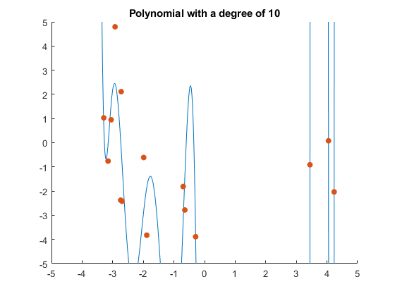

m=15;
a1=-5;
b1=5;
d= a1*ones(m,2)+ (b1-a1).*rand(m,2);
degrees = [1,5,10];
figure(1);
hold on;
[P1, least1] = generatePoly(m, d, degrees(1));
fplot(P1,[a1-.5,b1+.5])
x1=d(:,1);
y1=d(:,2);
scatter(x1,y1,"filled","o")
xlim([-5 5])
ylim([-5 5])
title('Polynomial with a degree of 1')
[P2, least2] = generatePoly(m, d, degrees(2));
figure(2);
hold on;
fplot(P2,[a1-.5,b1+.5])
scatter(x1,y1,"filled","o")
xlim([-5 5])
ylim([-5 5])
title('Polynomial with a degree of 5')
[P3, least3] = generatePoly(m, d, degrees(3));
figure(3);
hold on;
fplot(P3,[a1-.5,b1+.5])
scatter(x1,y1,"filled","o")
xlim([-5 5])
ylim([-5 5])
title('Polynomial with a degree of 10')
disp('Least squares error for degree 1:')
disp(least1)
disp('Least squares error for degree 5:')
disp(least2)
disp('Least squares error for degree 10:')
disp(least3)
function [P, least] = generatePoly(m, d, n)
A=zeros(m,n+1);
for i=1:m
for j=1:(n+1)
A(i,j)=d(i,1)^(j-1);
end
end
b=zeros(m,1);
for i=1:m
b(i)=d(i,2);
end
B=A'*A;
R=rref([A'*A,A'*b]);
y=R(:, end);
syms x
P = 0;
for i =1:n+1
P = P + y(i) * x^(i-1);
end
er=zeros(m,1);
for i=1:m
P_D = 0;
pointX = d(i,1);
for j=1:n+1
P_D = P_D + y(j) * pointX^(j-1);
end
er(i)=abs(d(i,2)- P_D);
end
least = norm(er);
end
Least squares error for degree 1:
8.5336
Least squares error for degree 5:
6.8643
Least squares error for degree 10:
5.7783
